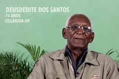

Testemunhos
Sr. Deusdedit dos Santos - QNM 21 /Ceilândia Sul

Em meados de junho de 2011, comecei a sentir uma dor no fígado, esse sintoma se agravou passando a interferir no meu dia-a-dia. Já não podia mais praticar exercícios físicos nem dirigir, estava sempre indisposto, então resolvi procurar o médico, este me examinou e pediu que eu realizasse alguns exames. O resultado acusou hepatite C. Então resolvi colocar a minha fé em prática. Como já era frequentador da casa da cura e da libertação(Profeta Ezequiel), fui orientado a fazer um tratamento espiritual, participei de várias sessões e fui submetido a uma cirurgia espiritual. A partir daí já me sentia melhor, então fui orientado a repetir os exames, para minha surpresa e dos médicos já não tinha mais hepatite, pela graça de Deus.
Valdir de Paula
Sessenta anos de idade, membro do grupo da Cura e Libertação Espiritual, dou o meu testemunho de que fui curado no mês de janeiro de 2012. Antes da cirurgia espiritual, sentia dores na coluna, que parecia estar ficando "empenada", agora depois do tratamento, estou curado e me sinto rejuvenescido e com muita disposição. Graças a Deus.
Alfredo Vicente de Araújo
Fui operado espiritualmente de inflamação com 7 mm no pâncreas, pulmão, veias, artérias, pernas, gastrite, pedra nos rins, hoje já não sinto mais nada, recebi a cura graças ao nosso senhor Jesus Cristo. Não posso deixar também de testemunhar pela minha filha, Priscila Farias de Araújo, que passou por uma depressão profunda que tirou o seu sentido de vida. Já não tinha mais vontade de estudar, se relacionar com as pessoas. Foi quando resolvi levá-la na casa da cura e da libertação, recebeu orações e eu passei a interceder por ela. A Priscila hoje, já não tem mais nada, está curada. Terminou a faculdade, está casada e feliz e me deu uma neta linda.
Antônia Mesquita
Comecei a freqüentar a casa há mais ou menos, seis meses. Sentia muitas dores nas juntas do corpo, além de sofrer de pressão alta há vários anos. Após passar pelos primeiros encontros já senti melhoras no corpo, antes sentia dores horríveis nas pernas algo que já sumiu completamente e hoje já não me incomoda em nada, mesmo com as atividades físicas intensas que tenho. Há anos tinha pressão alta e vivia de fazer dietas e tomar remédios para controlá-la, isso também, já é algo que ficou no passado, minha pressão há tempos está normal, me livrei dos remédios. Graças a Deus fui curada e hoje posso dar o meu testemunho, continuo freqüentando a casa com muita fé e amor, pois sei que receberei mais graças, se assim Deus permitir.
Orlan Dourado
Tinha câncer na próstata, fiz cirurgia na Casa da Cura e Libertação Espiritual e estou curado e agora estou fazendo tratamento das vistas e espero alcançar mais essa bênção e muitas outras em nome de Jesus Cristo. Amém!